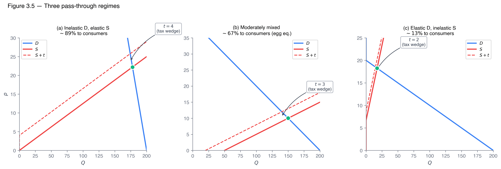
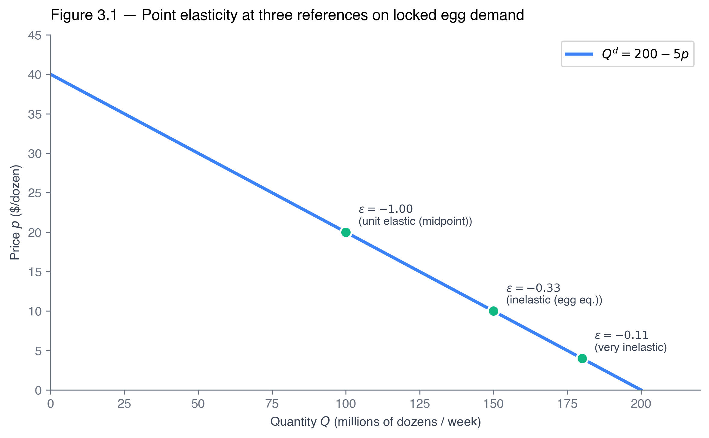
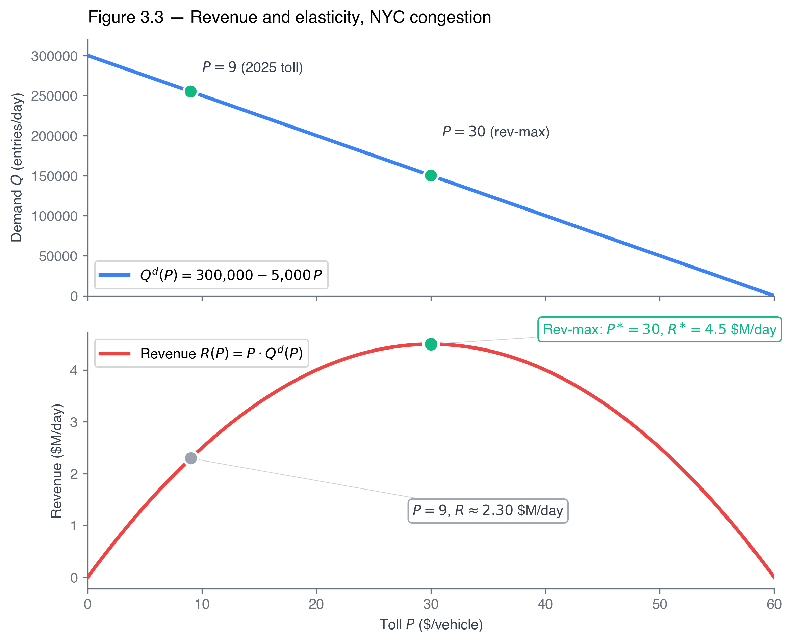
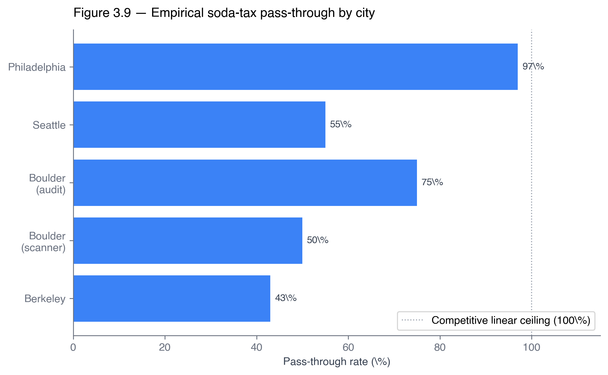

From midpoint to derivative — tax incidence, deadweight loss, and price controls in dollars.
Dr. Richeng Piao
Department of Economics
Northeastern University — 100 min
Learning Objectives
By the end of class today, you will be able to…
3.1
Compute point elasticity \(\varepsilon = (dQ/dp)(p/Q)\); distinguish from arc elasticity. (Bloom L3)
3.2
Locate elastic, inelastic, and unit-elastic zones along a linear demand curve; find the revenue-max price. (Bloom L4)
3.3
Derive the tax-incidence formula \(dp_c/dt = \varepsilon_S/(\varepsilon_S - \varepsilon_D)\) by total differentiation; apply to cigarettes, FICA, soda. (Bloom L4)
3.4
Compute deadweight loss as the integral between inverse demand and inverse supply; reduce to the Harberger triangle. (Bloom L4)
3.5
Analyze price ceilings and price floors with welfare integrals; classify pass-through regimes (sub-, full-, over-). (Bloom L5)
Retrieval Practice (3 min)
Quick — no grade, just hands. Wake up your Principles of Micro muscles.
Q1 — Midpoint formula
Price drops from \(\$10\) to \(\$8\); quantity rises from \(40\) to \(50\). What's the arc elasticity of demand?
Q2 — Tax direction
A new \(\$1\)/pack tax on cigarettes. Where does most of the burden land — buyers or sellers?
Q3 — Rent control
A binding rent ceiling. Does quantity supplied rise, fall, or stay the same?
Today: we promote midpoint to derivative, the burden split to a formula, and the welfare loss to dollars.
The Tariff Question on the Front Page
Spring 2025 — the WSJ asks: who actually paid the new tariffs?
Trump “Liberation Day” tariffs — April 2025
• Largest U.S. import-duty hike in ~80 years
• Gopinath-Neiman NBER (Jan 2026): pass-through to U.S. import prices ≈ complete
• NY Fed retail note (Mar 2026): consumer pass-through incomplete short-run, rising
Principles told us prices would rise. The front page wants a number.
Today's machine: point elasticity → incidence formula → deadweight integral.

Today's Roadmap
§3.1
Point elasticity — from midpoint to \(dQ/dp \cdot p/Q\).
§3.2–3.3
Linear demand zones + revenue at \(\varepsilon_D = -1\).
§3.4
Income & cross-price elasticities.
§3.5–3.7
Tax incidence + DWL + pass-through — the cigarette/payroll/soda triple.
A ratio is just a comparison of two numbers: how big is \(A\) relative to \(B\)? Write it \(A/B\) (read “\(A\) to \(B\)” or “\(A\) per \(B\)”).
The idea
\(\dfrac{A}{B} = 2\)
“\(A\) is twice \(B\).”
\(\dfrac{A}{B} = 0.5\)
“\(A\) is half of \(B\).”
\(\dfrac{A}{B} = 1\)
“\(A\) and \(B\) are equal.”
Apple \$1, water bottle \$2: ratio \(= 2/1 = 2\) — water is 2× the apple.
MBTA fare hike (July 2025)
New subway fare \(p_{\text{new}} = \$2.90\)
Old subway fare \(p_{\text{old}} = \$2.40\)
Ratio \(\dfrac{p_{\text{new}}}{p_{\text{old}}} = \dfrac{2.90}{2.40} \approx \mathbf{1.208}\)
“The new fare is 120.8% of the old fare” — or equivalently, “\$1.21 of new per \$1.00 of old.”
Order matters. \(2.90/2.40 = 1.208\) is “new per old.” Flipping it — \(2.40/2.90 \approx 0.828\) — says the old fare was 82.8% of the new. Same data, different ratio, different statement.
When demand (or supply) is very price-sensitive, a small change in price leads to large changes in quantities demanded (or supplied).
An elasticity with magnitude (absolute value) greater than 1 is classified as elastic.
Markets with low PED
Relatively large increases in price result in relatively small drops in quantity demanded.
Markets with large PED
Relatively small increases in price result in relatively large drops in quantity demanded.
Review · Principles of Microeconomics
Elasticities and Time Horizons
Same good, same price change — different elasticity depending on the time horizon. Substitutes take time to develop.
Short Run: Limited Flexibility, Lower Elasticity
⚡
EV demand grows over the 10-year window ⇒ gasoline demand becomes more elastic
Long Run (10 yr+): More Flexibility, Higher Elasticity
Same \$0.50 price drop. Short run: drivers already own gas cars — quantity barely moves. Long run: households can substitute (EVs, transit, hybrid), so the same price change drives a much larger quantity response.
Amazon's decision to cut prices at Whole Foods in 2017 is a real-world application of demand elasticity + substitutes.
Amazon “believed demand for many products sold at Whole Foods was more elastic than previous management did.”
More substitutes → more elastic demand.
Broad groupings (juice, beef) → inelastic.
Narrowly defined goods (Shredded Wheat, Toyota Corolla) → more elastic.
Review · Principles of Microeconomics
Elasticities and Linear Demand & Supply
We often assume demand and supply are linear, so knowing how to calculate elasticity along a linear curve is important. (Using \(d\) instead of \(\Delta\) — same idea, calculus notation.)
Along an inverse linear demand/supply, the ratio \(dQ/dP = 1/\text{slope}\). Rewrite the formula:
\(\displaystyle E = \frac{dQ/Q}{dP/P} = \frac{dQ}{dP}\cdot\frac{P}{Q} = \underbrace{\frac{1}{\text{slope}}}_{\substack{\text{constant along}\\\text{the curve}}}\cdot\underbrace{\frac{P}{Q}}_{\substack{\text{falls as you move}\\\text{down the curve}}}\)
As you move down a linear demand curve, demand becomes less elastic (more inelastic).
Eventually perfectly inelastic at the horizontal (Q) axis.
And perfectly elastic at the vertical (P) axis.
Figure 6.1 — Walk along a linear demand: \(E\) varies as \(P/Q\) changes
Review · Principles of Microeconomics
Extreme Elasticities
(a) Perfectly inelastic
Perfectly Inelastic Demand & Supply
Quantity demanded/supplied does not change in response to price.
The ratio \(|\varepsilon_S|/|\varepsilon_D| = 2\) does most of the work in §3.5. Inelastic demand + moderately inelastic supply is the staple-food story.

Heads Up 3.1 — Our \(\varepsilon_D\) is negative
Principles often quoted \(|\varepsilon_D|\) as positive numbers. Micro Theory keeps the sign. Mix conventions and the incidence formula in §3.5 will produce negative pass-through shares — a guaranteed clue you've sign-flipped.
Translating from Principles of Micro
Principles of Micro's “elasticity 0.5” is our \(\varepsilon_D = -0.5\).
Principles of Micro's “elasticity 1.2” is our \(\varepsilon_D = -1.2\).
Sanity rule
Pass-through and burden shares should land in \([0,1]\). If you see a negative or \(>1\) result, check the sign on \(\varepsilon_D\) first.
Arc elasticity — the approximation
When you have only two scanner observations and no functional form, you can't take a derivative. You can still estimate elasticity from the data using the midpoint (arc) formula.
It's a finite-difference approximation to the point elasticity, evaluated somewhere between the two observations — close to the point at the midpoint, less accurate over large segments.
Rule of thumb
• You have a calibrated function \(Q^d(p)\) → use the point elasticity (a derivative).
• You have two FRED data points with no functional form → use the arc elasticity (a finite difference).
The Walkthroughs in this chapter use the point formula (we have the calibrated demand). The end-of-chapter data problems use the arc formula (FRED gives observations, not parameters).
Walkthrough 3.1 — NYC congestion: arc vs point
Problem. Demand \(Q^d(P) = 300{,}000 - 5{,}000\,P\) (Ch 1).
(a) Arc elasticity between \(P_1=\$9\) and \(P_2=\$12\).
(b) Point elasticity at \(P=\$9\).
(c) Point elasticity at \(P=\$12\) — check the arc lands in between.
\(\varepsilon_D = (-5{,}000)\cdot\dfrac{12}{240{,}000}\)
\(= \mathbf{-0.250}\)
Arc \(-0.212\) sits between \(-0.176\) and \(-0.250\). ✓
Takeaway. Arc averages; point pins. Both agree as \(\Delta p \to 0\). NYC commuters can't easily walk away from CBD travel — |\(\varepsilon_D\)| is tiny, which is why §3.5 will say buyers will absorb nearly the full tariff/toll wedge.
Application — The Value of Innovation
Consumer and producer surplus are how we measure the value a new product creates — e.g., a solar-powered car. The CS triangle is the welfare gain to buyers.
Thought experiment. Hold \(P^*\) and \(Q^*\) fixed. Draw two demand curves with different slopes, both through E. Which generates more CS?
1. Steep demand — inelastic
\(|\varepsilon_D| < 1\). Some inframarginal buyers will pay far above \(P^*\) ⇒ tall CS triangle.
2. Shallow demand — elastic
\(|\varepsilon_D| > 1\). Substitutes are easy; buyers' WTP clusters near \(P^*\) ⇒ short CS triangle.
Role of elasticity. At the same \((P^*, Q^*)\), more inelastic demand ⇒ more CS. Elasticity is the geometric translator between “steepness” and “welfare.”
Role of innovation
New products serving buyers with highly varied WTP (insulin pumps, iPhones, EVs) face steep demand ⇒ the CS triangle is large ⇒ the market creates big welfare gains.
Figure 3.3 — Consumer Surplus & Elasticity of Demand
Calculus Corner 3.1 — Elasticity = slope of \(\ln Q\) vs \(\ln p\)
\(\varepsilon_D = \dfrac{d\ln Q}{d\ln p}\)
Chain-rule check
\(\dfrac{d\ln Q}{d\ln p} = \dfrac{1}{Q}\cdot\dfrac{dQ}{dp}\cdot p = \dfrac{dQ}{dp}\cdot\dfrac{p}{Q}\). ✓
Why empiricists love this
Run a regression of \(\ln Q\) on \(\ln p\) — the coefficient is the elasticity. Gas demand: \(\hat\beta \approx -0.2\) (Hughes-Knittel-Sperling 2008).
§3.2–3.3 Linear Demand Zones & Revenue
14 min · Where on the curve are you?
Elasticity varies along a linear demand curve
For \(Q^d = a - bp\): slope \(=-b\) (constant), but \(\varepsilon_D = -bp/(a-bp)\) varies.
\(p \to 0\): \(\varepsilon_D \to 0\) (perfectly inelastic at \(Q\)-intercept)
\(p \to a/b\): \(\varepsilon_D \to -\infty\) (perfectly elastic at \(p\)-intercept)
\(Q = 40 - 5p\) at \(p = 5\):
same slope \(-5\), \(\varepsilon_D = (-5)(5/15) \approx -1.667\)
Same slope. Elasticities differ by a factor of 12. The \(p/Q\) ratio is doing all the work.
Poll #1: Where on the demand curve?
Linear demand \(Q^d = 100 - 2p\). At which price is demand unit elastic?
A) \(p = 10\)
B) \(p = 25\)
C) \(p = 50\)
D) Cannot tell — need more info
60 sec to vote
Answer: B — \(p = 25\)
Midpoint of a linear demand: \(p = a/(2b) = 100/(2 \cdot 2) = 25\). Plug in: \(\varepsilon_D = -2 \cdot 25/50 = -1\). ✓
Trap (D): “Need more info” misses the formula. \(\varepsilon_D = -1\) at the midpoint of any linear demand. The intercepts \(a, b\) determine where the midpoint lives, not whether it exists.
Two observations: (i) \(Q^d(p) > 0\) on the interior, so the sign of \(dR/dp\) equals the sign of \(1 + \varepsilon_D\). (ii) That sign depends entirely on where on the demand curve you sit — \(|\varepsilon_D|\) less than 1, equal to 1, or greater than 1.
Walkthrough 3.2 — The revenue-max NYC toll
Problem. \(Q^d(P) = 300{,}000 - 5{,}000\,P\).
(a) Find \(P^*\) that maximizes daily revenue.
(b) Compare with the actual \(\$9\) toll and scheduled \(\$12\).
(c) Check \(\varepsilon_D = -1\) at \(P^*\).
\(P=\$9\): \(R = \mathbf{\$2.295\text{M/day}}\) · \(P=\$12\): \(R = \mathbf{\$2.88\text{M/day}}\). \$9 << \$30 → deep in inelastic zone.
(c) Unit elasticity at \(P^*\)
\(\varepsilon_D = (-5{,}000)\cdot\dfrac{30}{150{,}000} = \mathbf{-1}\). ✓ Midpoint of linear demand \(\equiv\) revenue-max.

Takeaway. \(P^* = \$30\) is the revenue-max toll; the \$9 toll sits deep in the inelastic zone, so each step up the phase-in raises revenue. But revenue-max \(\ne\) welfare-max — the cordon exists to correct an externality (Ch 17).
Application 3.1 — NYC Congestion Year 1
$562.0M
Net revenue, 2025 first year (CBD Tolling Program disclosure, Feb 2026)
Volume down ~11% (~73K fewer vehicles/day). Revenue well above the \$500M projection — classic inelastic-demand fingerprint.
Implied arc \(\varepsilon_D \approx -0.05\) to \(-0.06\) over the \(\$0 \to \$9\) move. Even more inelastic than the locked linear schedule.
Phase-up schedule (already approved):
• \(\$9\) through 2027
• \(\$12\) in 2028–2030
• \(\$15\) in 2031
Inelastic demand is why the schedule slopes up. Revenue rises every step. Welfare optimum is a separate question.
Antitrust use: if two products have a large positive \(\varepsilon_{i,j}\), they belong in the same relevant market for merger analysis. Ch 12 (monopoly) and Ch 17 (network effects) lift this further.
Takeaway. Same answer two ways — the §3.5 elasticity formula and Ch 2's total differentiation are mathematically equivalent. Inelastic demand lands the shock on price; elastic supply absorbs it as quantity. Eggs have very small \(|\varepsilon_D|\) — why the 2022–2025 HPAI cull spiked prices but barely moved quantity.
Theory & Data 3.1 — How inelastic really?
Bakhtavoryan et al. 2021
Conventional U.S. table-egg demand: \(\varepsilon_D \approx -0.23\) at sample mean.
Range: \(-0.08\) to \(-0.27\).
J. Agric. & Applied Econ. 53: 280–300
Mitchell-Thompson-Malone 2024
2024 HPAI welfare anchor: \(\varepsilon_D = -0.228\). Estimated \(\$1.41\)B in CS lost from the outbreak.
Food Policy 126: 102655
The peer-reviewed estimate \(-0.23\) is even more inelastic than our textbook \(-1/3\). Reality is tougher than the linear toy. We use \(-1/3\) for clean Walkthroughs; carry \(-0.23\) in your head for real-world intuition.
People Respond to Incentives — The Cobra Effect
Key concept — Incentive
Anything that motivates a person to take a particular action — rewards (positive) or penalties (negative).
British colonial India: the government offered a bounty per dead cobra to reduce the snake population.
Phase 1. It works! People hunt cobras for the reward.
Phase 2. Entrepreneurs start breeding cobras to collect the bounty.
Phase 3. Government cancels the program. Breeders release their snakes — cobra population higher than before.
Lesson. Incentives are powerful — people respond. Designing them requires thinking several steps ahead about how behavior will adapt.
Review · Principles of Microeconomics (Ch 1)
Apply — How a Tax Reshapes Consumer Incentives
A per-unit tax \(t\) is an incentive change: it raises the price buyers pay from \(p^*\) to \(p_c > p^*\). How big is the response? — that's exactly what elasticity measures.
Luxury yachts (\(\varepsilon_D \approx -2\)), specific cereal brands, soda with substitutes.
Buyers walk away easily → tax shifts mostly to sellers / collapses the market.
Large \(\Delta Q\) → revenue rectangle is thin, DWL triangle is fat.
1990 U.S. luxury yacht tax: elastic demand → sales collapsed, boatbuilders absorbed it (not the rich). Repealed 1993.
Two halves of the same story. §3.5 formalizes this as the incidence formula \(dp_c/dt = \varepsilon_S/(\varepsilon_S - \varepsilon_D)\): the side with more inelastic behavior bears more of the tax — because that side can't respond by walking away.
Discussion 1 — Classify the elasticity
For each pair, predict the sign and (where you can) the rough magnitude. One sentence each. Press ↓ after each round to reveal a sample answer.
1. Insulin own-price
Insulin own-price elasticity for diabetic patients.
Sample answer
\(\varepsilon_D \approx 0\) (near-perfectly inelastic). Life-saving necessity with no close substitute ⇒ diabetic patients can't walk away from a price hike.
2. Organic kale income
Income elasticity of farmers' market organic kale.
Sample answer
\(\varepsilon_I > 1\) (luxury, normal good). High-income households buy disproportionately more — an upscale niche, not a staple.
3. UberX vs subway
Cross-price elasticity of UberX w.r.t. NYC subway fare.
Sample answer
\(\varepsilon_{ij} > 0\) (substitutes). Subway fare up ⇒ some riders switch to UberX. Magnitude small (subway/Uber serve different trip types).
4. PS games vs console
Cross-price elasticity of PlayStation games w.r.t. console price.
Sample answer
\(\varepsilon_{ij} < 0\) (complements). Console price up ⇒ fewer consoles sold ⇒ fewer game buyers in the market.
For finite nonzero elasticities: \(0 < dp_c/dt < 1\). Pass-through is strictly between 0% and 100% in the competitive linear model.
Reading the formula
\(\varepsilon_S - \varepsilon_D\) = total responsiveness on both sides. The ratio is the fraction of market responsiveness on the supply side — the consumer's share of the wedge.
Consumer share \(= 0.5/2.0 = \mathbf{0.25}\)
Producer share \(= \mathbf{0.75}\)
Shares flip. The formula tracks behavior, not the statute.
Takeaway. Inelastic demand ⇒ buyers bear most. With cigarettes' very small |\(\varepsilon_D\)|, an excise is politically effective as revenue (buyers can't walk away) and regressive as policy (smoking incidence is higher in low-income households). Application 3.2 (next slide) shows why state rates diverge by 30×.
Heads Up 3.3 — Statutory incidence is irrelevant
Whether the statute puts the tax on the buyer or the seller, the same \(dp_c/dt = \varepsilon_S/(\varepsilon_S - \varepsilon_D)\) emerges from total differentiation. Mathematical identity, not coincidence.
What is conventional
The sign on \(\varepsilon_D\). If you let the absolute value slip and write \(\varepsilon_S + |\varepsilon_D|\) in the denominator, the formula still gives the right answer. Mix the two conventions and you'll compute negative shares.
Application 3.3 — Philadelphia Soda Tax
~97%
Pass-through, Seiler-Tuchman-Yao 2021
\(\$0.015\)/oz on sweetened beverages, January 2017. Full \(\$1.80\) on a 12-pack of 10-oz cans showed up on the shelf.
JMR 58(1): 22–49
But also…
City beverage sales fell ~46%. About half offset by cross-border to untaxed suburbs. 2018 revenue \(\$76.5\)M vs projected \(\$100\)M.
Two simultaneous lessons: full pass-through (elastic supply, distributors easily shift inventory) and elastic consumer substitution to next-zip-code subs.
Application 3.4 — FICA Payroll Tax (15.3%)
Statute splits 7.65% / 7.65% between employer and employee. Designed to feel like shared burden.
Workers bear ~83%, not 50%. The “employer share” is largely passed through to workers as lower wages.
Why payroll tax looks progressive on paper but functions as a regressive wedge on labor income. The formula explains what Principles of Micro §7.3 only stated.
Application 3.2 — Why state cigarette taxes diverge by 30×
Source: Tax Foundation 2025 State Cigarette Excise Tax Rates; CDC STATE System.
With \(\varepsilon_D \approx -0.4\) (CDC long-run), the tax raises revenue nearly one-for-one — a state wanting revenue or deterrence can push the rate hard before the base erodes.
The regressivity flip
Same elasticity that makes the tax effective also makes it regressive: smoking is more prevalent in lower-income households, so burden-per-household share of income is sharply higher at the bottom.
NY & MA: Pigouvian framing (Medicaid externality). MO: competitive-advantage framing (attract IL border smokers). Ch 17 develops the Pigouvian side formally.
Poll #2: Burden split
Luxury yacht market: \(\varepsilon_D = -2.0\) (rich folks have substitutes), \(\varepsilon_S = 0.5\). 10% excise tax. Whose burden is bigger?
A) Buyers (rich folks pay)
B) Sellers (yacht builders eat it)
C) Equal split
D) Depends on the statute
60 sec to vote
Answer: B — Sellers eat it
Consumer share \(= 0.5 / (0.5 + 2.0) = 0.20\). Sellers bear 80%. The 1990 U.S. luxury tax on yachts and small aircraft was repealed in 1993 partly because boatbuilders absorbed it — jobs, not yachts, were lost.
Trap (D): Statutory irrelevance — the formula doesn't see whose paycheck the deduction shows up on. It sees behavior.
Area between inverse demand and inverse supply, between post-tax \(Q_t\) and pre-tax \(Q^*\).
Economics
Value of trades that didn't happen — not transferred, just gone.
Linear special case: \[\text{DWL} = \tfrac{1}{2} \cdot t \cdot \Delta Q\] — the Harberger triangle (1964 AER).
Calculus Corner 3.3 — Integral → triangle for linear S&D
Claim: \(\displaystyle\int_{Q_t}^{Q^*}[p^d(q) - p^s(q)]\,dq = \tfrac{1}{2}\cdot t \cdot \Delta Q\) — exactly, not as approximation, for linear demand and supply.
\(p^d(q)\) and \(p^s(q)\) are linear in \(q\), so their difference is linear too. A linear function taking value \(t\) at one endpoint and \(0\) at the other integrates to \(\tfrac{1}{2}\cdot t \cdot \Delta Q\) — the area of a right triangle.
Harberger 1964: for nonlinear S&D, a second-order Taylor expansion preserves the triangle as the leading term as \(t \to 0\). For large wedges or sharply curved demand, integrate directly.
Sidebar — Arnold Harberger (b. 1924) and "The Measurement of Waste"
Emeritus professor, U. Chicago. His 1964 AER paper "The Measurement of Waste" turned the welfare-loss triangle from a blackboard cartoon into a measurable dollar quantity.
Method: Taylor-expand the surplus integral around the pre-tax equilibrium → \(\text{DWL} \approx \tfrac{1}{2}t\Delta Q\). First applied to U.S. corporate-income taxation; generalized immediately to any wedge: tax, subsidy, tariff, price control.
Before 1964
“Taxes are inefficient.” Qualitative; rhetorical.
After 1964
Welfare loss is a number in dollars, comparable across policies. The term Harberger triangle becomes universal.
Forward reference: Frank Ramsey (1927) took the same logic the other way — the inverse-elasticity rule for optimal commodity taxation. Ch 17 picks this up.
Walkthrough 3.5 — \(\$3\) egg tax: DWL by two methods
Problem. \(Q^d = 200 - 5p\), \(Q^s = 50 + 10p\), tax \(t = \$3\) (seller-statutory).
(a) Post-tax \(p_c\), \(p_s\), \(Q_t\), revenue.
(b) DWL by the Harberger triangle.
(c) DWL by direct integration — verify it agrees.
Takeaway. Both methods agree. DWL is just 3.6% of revenue here — a small tax on inelastic demand. Sanity check at endpoints: integrand \(= t = 3\) at \(q = Q_t = 140\); integrand \(= 0\) at \(q = Q^* = 150\). Linear-in-\(q\) integrand falling from \(t\) to \(0\) is exactly why the triangle formula is exact, not approximate, in the linear case.
Heads Up 3.4 — DWL grows with \(t^2\), not \(t\)
“Double the tax, double the DWL” — wrong. \(\Delta Q\) scales with \(t\), so \(\text{DWL} = \tfrac{1}{2} t \Delta Q\) scales with \(t^2\).
\(t = \$1\)
Baseline DWL
\(t = \$2\)
4× DWL
\(t = \$3\)
9× DWL
Why economists are suspicious of extreme tax rates — the efficiency cost grows faster than the revenue.
Discussion 2 — What if \(t = \$6\)?
Take the egg-market Walkthrough 3.5 numbers (\(Q^d=200-5p\), \(Q^s=50+10p\)). Now double the tax to \(t = \$6\).
Solve for \(p_c\), \(p_s\), \(Q_t\).
Compute revenue and DWL.
How much did revenue grow vs the \(t = \$3\) case? How much did DWL grow?
Sketch the parallel for a \(t = \$9\) tax. (No need to solve in full; reason from \(t^2\).)
Think 2 min · Pair 2 min · Random call × 2
§3.7 Pass-Through Regimes
8 min · The 0–100% benchmark and what breaks it
Three pass-through regimes
\(0 < dp_c/dt < 1\)
Sub-100%
Linear competitive baseline. Both finite elasticities.
\(dp_c/dt = 1\)
Full 100%
Perfectly elastic supply (\(\varepsilon_S \to \infty\)). Small open economy on world market.
\(dp_c/dt > 1\)
Over-shifting
Cannot arise in competitive linear model. Fingerprint of market power.
Pass-through is a testable empirical quantity. When the data show \(> 100\%\), Ch 11 (monopoly) gives the formula that explains why.
Theory & Data 3.2 — Philly vs Boulder soda
Philadelphia (1.5¢/oz, 2017): pass-through \(\approx \mathbf{97\%}\) (Seiler-Tuchman-Yao 2021)
Boulder (2¢/oz, 2017): \(\approx \mathbf{50\%}\) (scanner) to \(\mathbf{75\%}\) (audit) (Cawley et al. 2021)
Same theory, different numbers. Some is measurement (data type matters); some is structural (Philly chain-grocery vs Boulder mix).

Poll #3: When does pass-through exceed 100%?
2025 tariff data show some categories with pass-through estimates above 1.0. What does this most likely indicate?
A) Measurement error in the data
B) Market power on the seller side
C) The competitive linear model is wrong
D) Both B and C
60 sec to vote
Answer: D — Market power + non-competitive structure
Over-shifting is the fingerprint that the market isn't the competitive linear benchmark. Ch 11 derives the monopolist's pass-through formula and shows when it can exceed 1.0.
Takeaway. Three simultaneous effects: transfer (\$135M/mo from landlords to the 300K inframarginal tenants), DWL (\$202.5M/mo on the 450K apartments that no longer trade), and a shortage of 900K units. Distribution — who wins the lottery of the 300K available apartments — is a separate question, not captured by the welfare integrals (cf. Application 3.5 St. Paul).
Application 3.5 — St. Paul Rent Control (2021)
November 2021 ballot: rent increases capped at 3% per year — one of strictest in U.S.
Ahern & Giacoletti (2026, JUE):
Capitalized property values fell measurably — landlord-side equivalent of falling PS.
The wrinkle: gains went mostly to existing rent-controlled tenants — not systematically the poorest.
Distributional consequences are not in the DWL number. Welfare integrals tell you the efficiency cost; targeting is a separate empirical question.
Walkthrough 3.7 — Welfare under a binding minimum wage
Problem. Fast-food labor: \(W^d(L) = 80 - L\), \(W^s(L) = L - 20\). \(W\) in \$/hr, \(L\) in 100s of workers. Floor \(\underline W = \$40\).
(a) Pre-floor \(L^*\), \(W^*\), \(\text{TS}^*\).
(b) Post-floor hired, want-jobs, employer + worker surplus.
(c) Compute DWL + triangle check.
Takeaway. Three simultaneous effects: transfer (employers → hired workers, ~450 units), unemployment (20 units of involuntary), and DWL (100). Mirror image of the ceiling story. Caveat: this assumes a competitive labor market — HeadsUp 3.5 next slide flips the welfare conclusion if employers have monopsony power.
Theory & Data 3.3 — California \(\$20\) Fast-Food
Berkeley IRLE (Apr 2026)
Wages +11%, prices +1.5%, employment ~ zero (CI includes small reductions). Reference group: other CA restaurant sectors.
Clemens-Edwards-Meer (Jul 2025, NBER)
Employment −2.7% to −3.2%, ~18K jobs lost. Implied \(\varepsilon \in [-0.49, -0.29]\). Reference: national fast-food chains.
Both DiD on QCEW. Disagree on reference group + window. The DWL formula doesn't tell you which estimate to believe — that's an empirical-design question. The formula tells you that if \(\varepsilon_{L,d}\) is small, DWL is small.
Heads Up 3.5 — Min wage in monopsony can raise employment
The competitive welfare story assumes both sides are price-takers. In a monopsony (single large employer in a small geography), a binding minimum wage between the monopsony wage and the competitive wage raises both employment and wages.
Why this matters here: the Berkeley null-employment finding for California fast-food may reflect monopsony power in local labor markets — not a rejection of the welfare framework.
Ch 19 derives this formally as the labor-market mirror of monopoly (Ch 11).
Discussion 3 — The minimum-wage debate
California \(\$20\) fast-food wage. Two studies, two answers. What do you do?
State which study's research design you'd put more weight on, and why.
What additional data would help you decide?
Even if employment falls 3%, what other welfare components matter that the DWL integral doesn't capture?
Think 90s · Pair 90s · Random call × 3
Poll #4: Minimum-wage trade-off
Which conclusion follows most directly from the elasticity framework alone (no monopsony)?
A) Raising the minimum wage always reduces welfare
B) DWL is larger when labor demand is more elastic
C) Workers always benefit from a higher minimum wage
D) Employment effects are independent of elasticities
60 sec to vote
Answer: B — DWL grows with \(|\varepsilon_{L,d}|\)
The integral grows with \(\Delta L\), and \(\Delta L\) grows with the elasticity of demand. Trap (A): ignores the transfer to hired workers. Trap (C): the unemployed don't benefit. Trap (D): elasticities are the drivers in the formula.
Where this comes back
Ch 6 — Demand
Income & cross-price elasticities derived from utility maximization, not assumed.
Ch 11 — Monopoly
Lerner index \((P-MC)/P = -1/\varepsilon\) is today's unit-elasticity rule turned inside out. Over-shifting follows.
Ch 17 — Pigouvian taxes
Optimal \(t = MEC\) (not revenue-max). Today's DWL integral becomes the welfare gain from internalizing externalities.
Ch 19 — Monopsony
Min wage in monopsony can raise employment. Today's HeadsUp 3.5 made formal.
Key Takeaways
Elasticity is a point concept. \(\varepsilon = (dQ/dp)(p/Q)\). On linear demand, slope is constant but elasticity varies.
Revenue is maximized at \(\varepsilon_D = -1\). Inelastic zone: raise the price. Elastic: lower it.
Tax incidence: \(dp_c/dt = \varepsilon_S/(\varepsilon_S - \varepsilon_D)\). Statutory split is irrelevant; the inelastic side bears more.
DWL = the integral. Linear case: Harberger triangle \(\tfrac{1}{2}t\Delta Q\), grows with \(t^2\).
Pass-through in competitive linear markets is in \([0,1]\). Outside that range ⇒ market power.
Price ceilings & floors use the same integrals: transfer + DWL + shortage/unemployment.
The grocery manager from Ch 2 can now answer not just “will price rise?” but “by how much, and who pays?” in dollars.
Exit Ticket (2 min)
Federal proposal: \(\$1\)/pack tax on cigarettes. \(\varepsilon_D = -0.4\), \(\varepsilon_S = 1.6\). One sentence each.
Compute the consumer share of the burden.
Sketch the tax-revenue rectangle vs the DWL triangle for the linear case.
If demand were instead \(\varepsilon_D = -1.2\) (more elastic teen smokers), would DWL be larger or smaller?
One sentence: why is the cigarette excise considered regressive, given (1)?
Drop in your section folder before you leave. Next class: Ch 4 — Preferences and Utility.
Resources for self-study
Textbook
Goolsbee/Levitt/Syverson 4e ch 3; Varian Intermediate Microeconomics with Calculus ch 16.
Math Appendix A
A.3 implicit function theorem (incidence derivation); A.8 integration as area (DWL integral).
Practice problems
EOC Problems 1–18. Especially:
• P14 (derive incidence by total differentiation)
• P16 (‡ two-market pass-through comparison)
Data
FRED APU0000708111 — eggs. NYC Open Data t6yz-b64h — CBD entries 2025.
Seiler-Tuchman-Yao 2021 (Philadelphia soda).